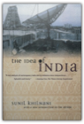
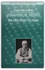

Readings in Tokugawa Thought: Select Papers, Volume 9, Third Edition
B005GIPATM

The Education of Henry Adams
Henry Adams
067964010X
'I cannot remember when I was not fascinated by Henry Adams,' said Gore Vidal. 'He was remarkably prescient about the coming horrors.'His political ideals shaped by two presidential ancestors—great-grandfather John Adams and grandfather John Quincy Adams—Henry Adams was one of the most powerful and original minds to confront the American scene from the Civil War to the First World War.
Printed privately in 1907 and published to wide acclaim shortly after the author&'s death in 1918, The Education of Henry Adams is a brilliant, idiosyncratic blend of autobiography and history that charts the great transformation in American life during the so-called Gilded Age.
With an introduction by renowned historian Edmund Morris.

Selected Poems of Anna Akhmatova
Anna Akhmatova, Judith Hemschemeyer, Roberta Reeder
0939010615
A companion to The Complete Poems, this collection offers in a bilingual format some of the Russian poet’s most intense and lyrical moments, while retaining a preface by Roberta Reeder and accompanying notes for Judith Hemschemeyer’s translations. "We needn’t worry again about how to read Akhmatova in translation."—The Observer (London) "In this restrained and accurate translation ... the sense and message strike with all the weight of the original." —New York Times Book ReviewJudith Hemschemeyer began translating Akhmatova in 1976. She is a professor at the University of Central Florida, and has published several books of poetry and translations. Roberta Reeder has taught at Harvard and Yale and is the author of Akhmatova’s biography, Anna Akhmatova: Poet & Prophet.
Also available by Anna Akhmatova
The Complete Poems of Anna Akhmatova
PB $29.00, 0-939010-27-5 • CUSA
A companion to The Complete Poems, this collection offers some of the Russian poet's most intense and lyrical moments in bilingual format, while retaining a preface by Roberta Reeder and accompanying notes for Judith Hemschemeyer's translations. "We needn't worry again about how to read Akhmatova in translation." -The Observer (London) "In this restrained and accurate translation ... the sense and message strike with all the weight of the original." -New York Times Book Review
Nothing Like It In the World: The Men Who Built the Transcontinental Railroad 1863-1869
Stephen E. Ambrose
0743203178
Nothing Like It in the World gives the account of an unprecedented feat of engineering, vision, and courage. It is the story of the men who built the transcontinental railroad — the investors who risked their businesses and money; the enlightened politicians who understood its importance; the engineers and surveyors who risked, and sometimes lost, their lives; and the Irish and Chinese immigrants, the defeated Confederate soldiers, and the other laborers who did the backbreaking and dangerous work on the tracks.The U.S. government pitted two companies — the Union Pacific and the Central Pacific Railroads — against each other in a race for funding, encouraging speed over caution. Locomotives, rails, and spikes were shipped from the East through Panama or around South America to the West or lugged across the country to the Plains. In Ambrose's hands, this enterprise, with its huge expenditure of brainpower, muscle, and sweat, comes vibrantly to life.

Modern Philosophy: An Anthology of Primary Sources
Roger Ariew, Eric Watkins
0872204405
This new anthology offers the key works of seven major philosophers along with a rich selection of associated texts by other leading thinkers of the period chosen to enhance the reader's understanding of modern philosophy and its relationship to the natural science of the time. A brief general introduction describes the intellectual climate in which the works to follow were conceived. Short chapter introductions give pertinent details about specific philosophers and their works. Texts are provided in their entirety or in substantive selections, including a new abridgement of Kant's Critique of Pure Reason commissioned especially for this volume. Alternatives to the 'main' texts — for example, Kant's Prolegomena is also included — give instructors flexibility while providing students with the best translations of the primary source materials at an eminently reasonable price. Roger Ariew is Professor of Philosophy and Eric Watkins is Assistant Professor of Philosophy, Virginia Polytechnic Institute and State University.

Sources of Japanese Tradition, Volume One: From Earliest Times to 1600
Wm. Theodore de de Bary, Donald Keene, George Tanabe, Paul Varley
0231121393
Sources of Japanese Tradition is a best-selling classic, unrivaled for its wide selection of source readings on history, society, politics, education, philosophy, and religion in the Land of the Rising Sun. In this long-awaited second edition, the editors have revised or retranslated most of the texts in the original 1958 edition, and added a great many selections not included or translated before. They have also restructured volume 1 to span the period from the early Japanese chronicles to the end of the sixteenth century. New additions include:o readings on early and medieval Shinto and on the tea ceremony,
o readings on state Buddhism and Chinese political thought influential in Japan, and
o sections on women's education, medieval innovations in the uses of history, and laws and precepts of the medieval warrior houses.
Together, the selections shed light on the development of Japanese civilization in its own terms, without reference to Western parallels, and will continue to assist generations of students and lay readers in understanding Japanese culture.

The Sinews of Power: War, Money and the English State, 1688-1783
John Brewer
0674809300
This powerful interpretation of English history provides a completely new framework for understanding how Britain emerged in the eighteenth century as a major international power.Brewers brilliant analysis makes clear that the drastic increase in Britain's military involvement (and success) in Europe and the expansion of her commercial and imperial interests would not have happened without a concurrent radical increase in taxation, along with a surge in deficit financing and the growth of a substantial public administration. Warfare and taxes reshaped the English economy, and at the heart of these dramatic changes lay an issue that is still very much with us today: the tension between a nation's aspirations to be a major power and fear of the domestic consequences of such an ambition—namely, the loss of liberty.

Reflections on the Revolution in France
Edmund Burke, J. G. A. Pocock
0872200205
John Pocock's edition of "Burke's Reflections" is two classics in one: "Burke's Reflections" and "Pocock's Reflections on Burke and the Eighteenth Century".

The Fabrication of Louis XIV
Mr. Peter Burke
0300059434
Louis XIV was man like any other, but the money and attention lavished on his public image by the French government transformed him into a godlike figure. This book gives an account of contemporary representations of Louis XIV and shows how the making of the royal image illuminates the relationship between art and power. Images of Louis XIV included hundreds of oil paintings and engravings, 300 odd medals struck to commemorate the major events of the reign, sculptures, and bronzes, as well as plays, ballets, operas, odes, sermons, official newspapers and histories, fireworks, fountains, and tapestries. Drawing on an analysis of these representations as well as on surviving documentary sources, Peter Burke shows the conscious attempt to "invent" the image of the king and reveals how the supervision of the royal image was entrusted to a committee, the so-called small academy. The book is not only a chronological study of the mechanics of the image-making of a king over the course of a 70-year reign, but is also an investigation into the genre of cultural construction. Burke discusses the element of propaganda implicit in image-making, the manipulation of 17th-century media of communication, the channels of communication (oral, visual and textual) and their codes (literary and artistic) and the intended audience and its response. He concludes by comparing and contrasting Louis' public image with that of other rulers ranging from Augustus to contemporary American presidents.
The Scholars
Wu Ching-tzu
0231081537
A masterpiece from the Ming dynasty, Wu Ching-tzu's The Scholars ranks with Dream of the Red Chamber, Journey to the West, and the Water Margin as one of the greatest classic novels of China. The Scholars is the first Chinese novel of its scope not to borrow any characters from history or legend and it is the first work of satiric realism to achieve an almost complete disassociation from the religious beliefs of the people. Departing from the impersonal tradition of Chinese fiction, Wu abandons such established narrative formulas as folk songs and poetic verse in favor of autobiographical experiences, descriptive realism, and characters modeled after his friends and relatives — elements that combine to give this critique of the Confucian civil service system an unprecedented immediacy and humor.

God's Playground: A History of Poland, Vol. 1: The Origins to 1795
Norman Davies
0231128177
The most comprehensive survey of Polish history available in English, God's Playground demonstrates Poland's importance in European history from medieval times to the present. Abandoning the traditional nationalist approach to Polish history, Norman Davies instead stresses the country's rich multinational heritage and places the development of the Jewish German, Ukrainian, and Lithuanian communities firmly within the Polish context.Davies emphasizes the cultural history of Poland through a presentation of extensive poetical, literary, and documentary texts in English translation. In each volume, chronological chapters of political narrative are interspersed with essays on religious, social, economic, constitutional, philosophical, and diplomatic themes.
This new edition has been revised and fully updated with two new chapters to bring the story to the end of the twentieth century.

God's Playground: A History of Poland, Vol. 2: 1795 to the Present
Norman Davies
0231128193
The most comprehensive survey of Polish history available in English, God's Playground demonstrates Poland's importance in European history from medieval times to the present. Abandoning the traditional nationalist approach to Polish history, Norman Davies instead stresses the country's rich multinational heritage and places the development of the Jewish German, Ukrainian, and Lithuanian communities firmly within the Polish context.Davies emphasizes the cultural history of Poland through a presentation of extensive poetical, literary, and documentary texts in English translation. In each volume, chronological chapters of political narrative are interspersed with essays on religious, social, economic, constitutional, philosophical, and diplomatic themes.
This new edition has been revised and fully updated with two new chapters to bring the story to the end of the twentieth century.
The Old European Order 1660-1800
William Doyle
019820387X
This survey of European history covers a period of one and a half centuries which witnessed the beginnings of the contemporary world. In his account of the economic, social, intellectual, and governmental structure and development of pre-revolutionary Europe, Doyle stresses throughout the importance of economic and social trends, and places emphasis on the analysis of the structure of society as well as the narration of events. He shows how the contradictions of the old order contributed to a crisis which affected several of the major states in the late eighteenth century, when the growth of governmental power led to a series of clashes between governments and governing classes. Out of these conflicts, particularly in France, arose a revolutionary crisis. The nature of this crisis, and the impact of the change it produced, are examined in detail in the final section of the book. For this second edition, Doyle has revised the text of the book, and comprehensively updated the Bibliography.
Mao's People: Sixteen Portraits of Life in Revolutionary China
B. Michael Frolic
0674548450
"How do we apply Chairman Mao's Thought to get fat pigs?" Squad Leader Ho (who knew the most about pigs) replied that, according to Chairman Mao, one must investigate the problem fully from all sides, and then integrate practice and theory. Ho concluded that the reason for our skinny pigs had to be found in one of three areas: the relationship between the pigs and their natural environment (excluding man); the relationship between the cadres and the pigs; and the relationship among the pigs themselves.And so the city slickers, sent down to the countryside for political reeducation, set out to find the Thousand-Dollar Pig, much to the bemusement of the local peasants.
The sixteen stories collected in this remarkable book give firsthand accounts of daily life in contemporary China. From 250 interviews conducted in Hong Kong between 1972 and 1976, Mr. Frolic has created charming vignettes that show how individuals from all parts of China led their lives in the midst of rapid social change and political unrest. We hear about oil prospectors, rubber growers, and factory workers, Widow Wang and her sit-in to get a larger apartment, the thoroughly corrupt Man Who Loved Dog Meat, the young people who flew kites to protest antidemocratic tendencies.
As fresh and original as the individual accounts are, common and timeless themes emerge: the sluggishness of an agrarian society in responding to modernization; the painful lack of resources in a poor and gigantic country; the constraints imposed on common people by the bureaucracy; the way in which individuals outwardly support the system and inwardly resist it; the limitations of heavy and conflicting doses of ideology in motivating individuals.
But there are also recurrent motifs of economic and social progress: production rises, illiteracy declines, and socialist values have impact. A new China has emerged, though change is occurring far more slowly than its leaders had intended.
Mao's People contains much new information on China both for the general reader and for specialists in the field. Above all, it is a completely engrossing and vivid glimpse into the ways of a nation we are only beginning to discover.

A History of the Twentieth Century 1900-1933, Vol. 1
Martin Gilbert
0688100643
What a terrible disappointment the twentieth century has been, was Winston Churchills comment in 1922. One world war was over, more than 6 million soldiers had been killed, and four vast empires had been destroyed. A second mass slaughterin which more than 46 million would diewas yet to come, bringing in its wake the arms race, the Cold War, and the nuclear age.This volume of Martin Gilberts three-volume narrative history of the century charts its first thirty-three years. Opening in the age of horse-drawn travel and colonial wars, Gilbert closes this volume with Roosevelt as the newly elected President of the United States, the inauguration of Adolf Hitler as Chancellor of Germany, and the first of Stalins show trials in the Soviet Union. As well as chronicling the wars, revolutions, and political upheavals, Gilbert tells the story of ordinary men and women in every continent, making them an integral part of the events of which they were sometimes the beneficiaries and often the victims.

The Histories
Herodotus, Carolyn Dewald
0192824252
"The father of history," as Cicero called him, and a writer possessed of remarkable narrative gifts, enormous scope, and considerable charm, Herodotus has always been beloved by readers well-versed in the classics. Compelled by his desire to "prevent the traces of human events from being erased by time," Herotodus recounts the incidents preceding and following the Persian Wars. He gives us much more than military history, though, providing the fullest portrait of the classical world of the 5th and 6th centuries. This readable new translation is supplemented with expansive notes to help the reader appreciate the book in depth.
The Age of Revolution: 1789-1848
Eric Hobsbawm
0679772537
This magisterial volume follows the death of ancient traditions, the triumph of new classes, and the emergence of new technologies, sciences, and ideologies, with vast intellectual daring and aphoristic elegance. Part of Eric Hobsbawm's epic four-volume history of the modern world, along with The Age of Capitalism, The Age of Empire, and The Age of Extremes.

A History of the Arab Peoples
Albert Hourani
0446393924
Encyclopedic and panoramic in its scope, this fascinating work chronicles the rich spiritual, political, and cultural institutions of Arab history through 13 centuries.
Selected Stories
Lu Hsun
0393008487
"Some of these stories, I am sure, will be read as long as the Chinese language exists."—Ha Jin"When I was young I, too, had many dreams. Most of them came to be forgotten, but I see nothing in this to regret. For although recalling the past may make you happy, it may sometimes also make you lonely, and there is no point in clinging in spirit to lonely bygone days. However, my trouble is that I cannot forget completely, and these stories have resulted from what I have been unable to erase from memory."—Lu HsunLiving during a time of dramatic change in China, Lu Hsun had a career that was as varied as his writing. As a young man he studied medicine in Japan but left it for the life of an activist intellectual, eventually returning to China to teach. Though he supported the aims of the Communist revolution, he did not become a member of the party nor did he live to see the Communists take control of China. Ambitious to reach a large Chinese audience, Lu Hsun wrote his first published story, "A Madman's Diary," in the vernacular, a pioneering move in Chinese literature at the time. "The True Story of Ah Q," a biting portrait of feudal China, gained him popularity in the West. This collection of eighteen stories shows the variety of his style and subjects throughout his career.
In a new introduction, Ha Jin, the author of Waiting (National Book Award winner), The Bridegroom, and other works, places Lu Hsun's life and work in the context of Chinese history and literature.

Pacific War, 1931-1945
Saburo Ienaga
0394734963
A portrayal of how and why Japan waged war from 1931-1945 and what life was like for the Japanese people in a society engaged in total war.

Video Night in Kathmandu: And Other Reports from the Not-So-Far East
Pico Iyer
0679722165
Mohawk hair-cuts in Bali, yuppies in Hong Kong and Rambo rip-offs in the movie houses of Bombay are just a few of the jarring images that Iyer brings back from the Far East.

The Idea of India
Sunil Khilnani
0374525919
The key book on India in the postnuclear era, with a new Introduction by the author.Our appreciation of the importance of India can only increase in light of the recent revelations of its nuclear capabilities. Sunil Khilnani's exciting, timely study addresses the paradoxes and ironies of this, the world's largest democracy. Throughout his penetrating, provocative work, he illuminates this fundamental issue: Can the original idea of India survive its own successes?

The Discovery of India
Jawaharlal Nehru
0195623592
In conjunction with the Jawaharlal Nehru Memorial Fund in New Delhi, Oxford proudly announces the reissue of Glimpses of World History and The Discovery of India, two famous works by Jawaharlal Nehru. One of modern day's most articulate statesmen, Jawaharlal Nehru wrote a on a wide variety of subjects. Describing himself as "a dabbler in many things," he committed his life not only to politics but also to nature and wild life, drama, poetry, history, and science, as well as many other fields. These two volumes help to illuminate the depth of his interests and knowledge and the skill and elegance with which he treated the written word.

Hiroshima Notes
Kenzaburo Oe
0802134645
Hiroshima Notes is a powerful statement on the Hiroshima bombing and its terrible legacy by the 1994 Nobel laureate for literature. Oe’s account of the lives of the many victims of Hiroshima and the valiant efforts of those who cared for them, both immediately after the atomic blast and in the years that follow, reveals the horrific extent of the devastation. It is a heartrending portrait of a ravaged city the human face” in the midst of nuclear destruction.
The Orwell Reader: Fiction, Essays, and Reportage
George Orwell
0156701766
Here is Orwell’s work in all its remarkable range and variety. The selections in this anthology show how Orwell developed as writer and as thinker; inevitably, too, they reflect and illuminate the history of the time of troubles in which he lived and worked. “A magnificent tribute to the probity, consistency and insight of Orwell’s topical writings” (Alfred Kazin). Introduction by Richard H. Rovere.

In Praise of Shadows
Junichiro Tanizaki
0918172020
An essay on aesthetics by the Japanese novelist, this book explores architecture, jade, food, and even toilets, combining an acute sense of the use of space in buildings. The book also includes descriptions of laquerware under candlelight and women in the darkness of the house of pleasure.

China's Response to the West: A Documentary Survey, 1839-1923
Ssu-yu Têng, John King Fairbank
0674120256
The present confrontation of Communist China and the United States, on which the future of peace in Asia hinges, is merely the latest phase in a continuing historical process—the remaking of China's ancient society under the stimulus of Western contact. How does it happen that a century of foreign trade and missionary evangelism, of modern education and the training of Chinese students in Western ways, has now resulted in a seeming rejection of the West? What has been the real nature of "China's response to the West" during the past century of our contact?This volume gives the first inside account, on so broad a scale, of how China's leaders reacted to the invasion of Western arms and goods, persons and ideas, during the three generations from the Opium War to the rise of the Kuomintang. In 28 chapters, with translations of 65 key documents, the authors trace the stages by which the scholar-officials of the Middle Kingdom were brought to recognize successively the need for Western arms to defend their country, Western technology for making arms, modern science to support technology, its application in modern industry to strengthen the nation, and all the attendant new ideas which led them eventually into great movements for institutional reform, political revolution, and ideological reconstruction.
From the famous Commissioner un's first study of Western geography during his anti-opium crusade, through the efforts of Li Hungchang and others at "self-strengthening" by industrialization, down to the critical thought of Dr. Hu Shih and the eclecticism of Sun Yat-sen in the early 20th century, the writings of China's leaders ring the changes on a central theme how to remake their heritage and create a modern nation capable of meeting the West on equal terms. The provincial viceroys, the Reformers of 1898, the Boxers in 1900, the old Empress Dowager, and the eager students studying abroad, each in their own way, all grapple with this absorbing problem. The varied Chinese responses to the West in the formative century here analyzed give us a new insight into the springs of social action among one-fifth of mankind.
The companion volume, for the research specialist, provides Notes and Sources, Bibliography, and a Glossary of Chinese names and terms, essential bases for further exploration of this new field.
History of the Peloponnesian War
Thucydides, M. I. Finley
0140440399
Written four hundred years before the birth of Christ, this detailed contemporary account of the struggle between Athens and Sparta stands an excellent chance of fulfilling the author's ambitious claim that the work "was done to last forever." The conflicts between the two empires over shipping, trade, and colonial expansion came to a head in 431 b.c. in Northern Greece, and the entire Greek world was plunged into 27 years of war. Thucydides applied a passion for accuracy and a contempt for myth and romance in compiling this exhaustively factual record of the disastrous conflict that eventually ended the Athenian empire.
Democracy in America
Alexis De Tocqueville, J. P. Mayer
0060915226
Endlessly quoted and referred to, Tocqueville's great history is as relevant now as when it was first published in the mid-19th century, and it remains the most penetrating and astute picture of American life ever written.

German Home Towns: Community, State, and General Estate, 1648-1871
Mack Walker
0801485088
"German Home Towns certainly illuminates habits of life in the seventeenth, eighteenth and nineteenth centuries which were as distinctively German as the peasant world of Grimm's Fairy Tales."-Times Literary SupplementOriginally published in 1971, German Home Towns has been out of print for many years. Cornell University Press is pleased to make this classic book available again for the first time in a paperback edition. "[German Home Towns] is a book of the first importance. . . . [It] is a compelling illustration of what can be achieved by historians who abandon over-cropped Prussia and Austria in favor of the still unexploited regions of the 'Third Germany.'"-English Historical Review"[This book] breaks important new ground. . . . Walker's model . . . provides a useful kind of framework for what should hopefully be the next stage of German urban history: a recognition, through comparison, of urban diversity and an appreciation of this diversity within the broader concept of cultural cohesiveness."-Comparative Studies in Society and History
From Max Weber: Essays in Sociology
Max Weber, H. H. Gerth, C. Wright Mills
0195004620
Introducing the student to the work of a great sociologist, this book opens with a comprehensive biographical essay on Weber's life and work and includes his essays on science and politics, power, religion, and social structures.

China beyond the Headlines
Timothy B. Weston, Lionel M. Jensen
0847698556
This unique book takes the reader Obeyond the headlinesO to explore a China few Westerners have seen. The authors argue that the great gap between what specialists understand and the general public believes has led to distorted and potentially dangerous misunderstandings of China. Seeking to bridge that gap, a group of prominent scholars and activists challenge readers to move past the usual images of China presented by the media and to think about the common problems shared by China and the United States. In a morally engaged spirit, they explore such issues as environmental degradation, unemployment, growing inequality, ethnicity, human rights, corruption, and changing images of women to bring to life the fabric of contemporary Chinese life and how it twines around the political consciousness of Americans.

The Zinn Reader: Writings on Disobedience and Democracy
Howard Zinn
1888363541
No other radical historian has reached so many hearts and minds as Howard Zinn. It is rare that a historian of the Left has managed to retain as much credibility while refusing to let his academic mantle change his beautiful writing style from being anything but direct, forthright, and accessible. Whether his subject is war, race, politics, economic justice, or history itself, each of his works serves as a reminder that to embrace one's subjectivity can mean embracing one's humanity, that heart and mind can speak with one voice. Here, in six sections, is the historian's own choice of his shorter essays on some of the most critical problems facing America throughout its history, and today.